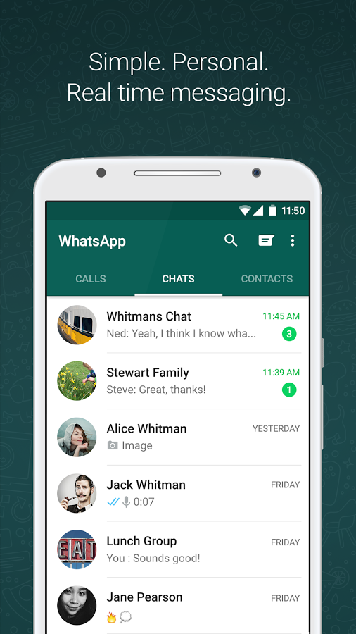
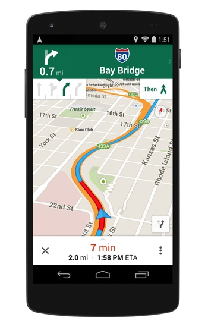

Ejemplos de sistemas mobiles
Android

Android es un sistema operativo basado en el núcleo Linux. Fue diseñado principalmente para dispositivos móviles con pantalla táctil, como teléfonos inteligentes, tablets o tabléfonos; y también para relojes inteligentes, televisores y automóviles. Inicialmente fue desarrollado por Android Inc., empresa que Google respaldó económicamente y más tarde, en 2005, la compró. Android fue presentado en 2007 junto la fundación del Open Handset Alliance (un consorcio de compañías de hardware, software y telecomunicaciones) para avanzar en los estándares abiertos de los dispositivos móviles.10 El primer móvil con el sistema operativo Android fue el HTC Dream y se vendió en octubre de 2008.11 Los dispositivos de Android venden más que las ventas combinadas de Windows Phone e IOS.
Windows Phone

Windows Phone (abreviado WP) es un sistema operativo móvil desarrollado por Microsoft, como sucesor de Windows Mobile. A diferencia de su predecesor está enfocado en el mercado de consumo en lugar de en el mercado empresarial. Con Windows Phone; Microsoft ofrece una nueva interfaz de usuario que integra varios de sus servicios propios como OneDrive, Skype y Xbox Live en el sistema operativo. Compite directamente contra Android de Google e iOS de Apple. Su última versión disponible y definitiva es Windows Phone 8.1, lanzado el 14 de abril de 2014.
Ejemplos de aplicaciones mobiles
WhatsApp

WhatsApp es una aplicación de mensajería instantánea, actualmente gratuita, para teléfonos inteligentes, que envía y recibe mensajes mediante Internet, complementando servicios de correo electrónico, mensajería instantánea, servicio de mensajes cortos o sistema de mensajería multimedia. Además de utilizar la mensajería en modo texto, los usuarios de la libreta de contacto pueden crear grupos y enviarse mutuamente, imágenes, vídeos y grabaciones de audio. Según datos de 2016 supera los 1000 millones de usuarios superando en 100 millones a Facebook Messenger.
Google Maps
Google Maps es una aplicación móvil de mapeo desarrollado por Google para los sistemas operativos Android e iOS; que utiliza Google Maps para su información. Primero fue lanzado para Android el 23 de septiembre de 2008, y más tarde para iOS el 13 de diciembre de 2012 como una alternativa a la de Apple Maps, que fue lanzado con iOS 6.
Ejemplos Desktop